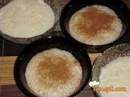

Sutlijas

Sutlijash originates in Turkey, it's a Turkish widely known dessert. Today, it is prepared in every country in the Balkan, including Macedonia. Sutlijash is a family dessert, it's easy to prepare and comes in large quantities. I love sutlijash.
Ingredients
- 500ml milk
- 800ml water
- 150g sugar
- 250g rice
- 1 sachet vanilla sugar
- cinnamon
Preparation
- Put rice with in a pot of water to boil until it thickens. A traditional measure of the proportion of rice to water is 1: 4. Stir constantly to avoid burning.
- When rice is almost done, add milk and continue to stir. Add more milk if needed.
- In the end, add sugar and vanilla sugar and cook for some time. Once fully thickens, move from fire and serve in glass bowls. Place cinnamon on top.